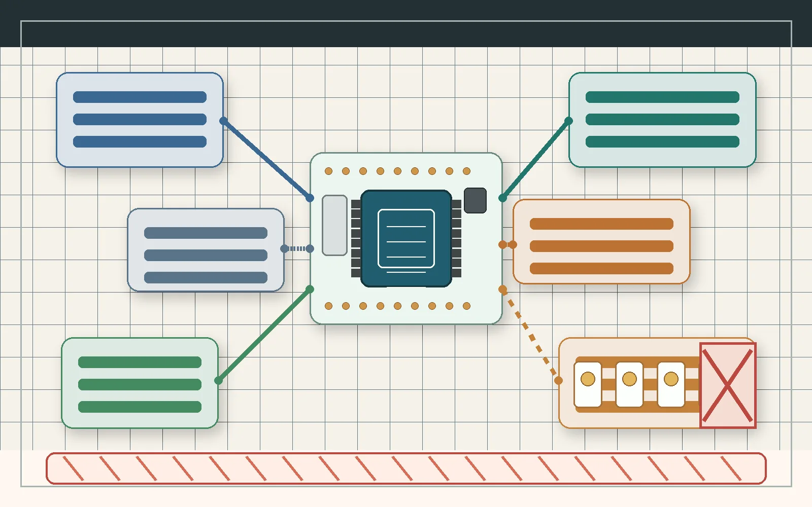

Workbench Technical
ESP32 four-relay build guide
A public, source-backed guide for the low-voltage construction path, relay-channel labeling, static admin HMI review, and hard safety gates for the XBee Wi-Fi controller prototype.

Browser HMIstatic review only
ESP32 controllerlow-voltage target
XBee 900HPread-only discovery
TFT branchwiring blocked
MicroSDassets and logs
Relay moduleinputs not wired yet
Load sidequalified review gate
Visual blueprint review
Start with the conceptual map and blocked wiring gates.
Board and shield inspection
Record power source, jumper state, rail checks, and shield continuity.
Relay input proof
Keep contacts disconnected while relay input behavior is verified.
XBee read-only discovery
Use passive discovery first, then confirmed AT read queries only.
Expansion dry proof
Prove mux inputs and expander latches before relay inputs.
Qualified load review
Treat load work as a review package, not a wiring procedure.
Relay Labels
Channel map and local labels
Output A
Shield routing and relay input behavior remain blocked.
Static admin HMI
Review the control surface without hardware
The demo publishes the same safety-locked relay states, storage panels, XBee status, logs, and locally saved relay labels without a backend requirement.
Launch demoSafety locked
Output AGPIO25
Output BGPIO26
Output CGPIO27
Output DGPIO33
All load contacts blocked
Source-backed safety gates
Review gates before load work
Mains work blocked
No step-by-step mains wiring instructions are published.
Read mains gateRelay contacts blocked
Relay module behavior must be verified before any load wiring.
Read power gatesMux relay outputs rejected
Relay pin relief moves to a latched expander and driver stage.
Read expansion planXBee writes blocked
Passive discovery and fixed AT read queries come before any radio setting changes.
Read XBee proofPublic file bundle
Allowlisted technical package
GitHub Pages publishes a generated artifact assembled by
scripts/build_github_pages.py. The public bundle keeps
source-backed docs and excludes agent records, private uploads,
vendor PDFs, bulky binaries, raw photos, and generated screenshots.